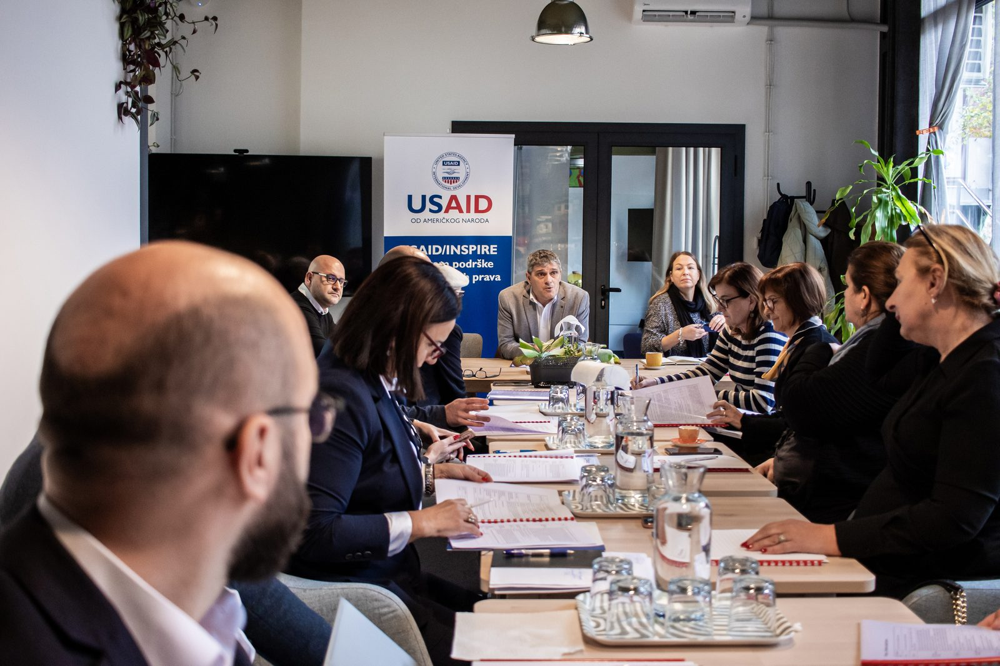

SKRIPTA works on public policy, governance and institutional reform, particularly where good solutions depend on understanding the political context, institutions, interests and how change actually happens.
Our experience has been built over more than two decades of work across public institutions, international programmes, research organisations and civil society — from strategic advisory and policy development to leading complex reform and research processes.
More than two decades of experience in public administration reform, decentralisation and local governance, from policy and institutional design to support for implementation. Our work spans central and local levels of government, institutional strengthening, relations across levels of government, inter-municipal cooperation and capacity development for local communities, with experience in Bosnia and Herzegovina, Moldova, Ukraine, Serbia and beyond.
Understanding European policies, institutions and reform processes, and translating them into domestic policy and practice. Our experience includes work with public institutions, international organisations, donors and European partners on reform, institutional development and EU integration.
Public policy research, political economy and institutional analysis, needs and capacity assessments, comparative research and evaluation. A particular focus is on understanding what lies behind formal rules: power relations, institutional incentives, interests and political constraints that shape what is possible in practice.
Democratic governance, political participation, institutional accountability, citizen engagement, advocacy and the role of civil society in shaping public policy. Our experience includes work with political actors, parliaments and public officials, strengthening the capacities of civil society organisations, and cooperation with local communities.
Integrating gender and inclusion perspectives into research, policies and programmes, including women’s political participation, social narratives, hate speech, advocacy and access to public policy for different social groups.
Connecting public policy, technology and user needs. Our experience includes the development and assessment of GovTech ecosystems, work on European innovation programmes, and support to the public sector in using digital solutions to address complex social and institutional challenges.
Strategic planning, organisational development, programme design, institutional learning and results monitoring. The focus is on ensuring that strategy does not remain a document, but becomes a basis for clearer decisions, better management and measurable impact.
Work in Bosnia and Herzegovina, across the Western Balkans, Moldova, Ukraine and Serbia, as well as with partners from Sweden, the United Kingdom, Switzerland, the United States and beyond. For us, international experience is not about transferring ready-made models, but about understanding what can be transferred, what needs to be adapted, and what will work only when it fits the local institutional and political context.

"Not just a room for meetings, but an experience that contributes to the event's success."
Our consulting services draw on the same experience we've built working with partners in the SKRIPTA IdeaLab space — visible through the real strategy sessions we've led.
We have worked with leading donors and organisations